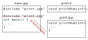

Lecture 5 - Sept 15, 2023
Summary
In this lecture, we discuss #ifndef include guards for header files, and introduce C++ I/O.
Last lecture
Multiple file programs and separate compilation.
Today
Macros and C++ I/O.
Recap from previous lecture
- main.cpp: print.o and input.o will not change. Only main.o will change.
g++ -c main.cpp
g++ main.o print.o input.o -o main.so- print.cpp: main.o and input.o will not change. Only print.o will change.
g++ -c print.cpp
g++ main.o print.o input.o -o main.so- print.h: This changes
#include "print.h"in main.cpp and print.cpp. This is tricky!
g++ -c main.cpp
g++ -c print.cpp
g++ main.o print.o input.o -o main.soIDEs, like VS Code, and Make files keep track of what file you changed and minimizes compile commands as they take time.
In short, dividing code across multiple files can save compilation time.
Macros
What happens if I include the same header (.h file) multiple times?
Why would someone do that?
What happens if?
To solve this, a preprocessor #ifndef guards against including a header file several times.
Solution
// a.h
#ifdef A_H
#define A_H
struct A {
...
}l
#endifThe first time “a.h” is read, it will find A_H is not defined.
Then it will define A_H and struct A.
The next time it reads “a.h”, A_H will be defined and hence would skip instructions until #endif.
In general, #ifdef [MACRO]ignores the whole code until #endif if [MACRO] is defined.
#ifndef [MACRO] ignores the whole code until #endif if [MACRO] is not defined.
Why do we need header files? Can we just have .cpp files and include it?
Example
// main .cpp
#include "print.cpp"
int main() {
...
}// print.cpp
#include <iostream>
void printNum(int x) {
...
}This means wheter I change print.cpp, I will have to re-compile main.cpp and print.cpp.
Also, linking will fail as main.cpp will have printNum() implemented and print.cpp too. You will have multiple definitions of printNum in the executable main, which is not allowed.

main.owill haveprintNum()implementationprint.oalready hasprintNum()implementationprintNum()is defined twiece, so linking will fail.
C++ I/O
There are many ways to take input and produce output.
Standard input-output
Using cout and cin from iostream.
#include <iostream>
using namespace std;
int main() {
int x;
cout "Hello world" << endl;
cin >> x;
return 0;
}File input-output
Using ifstream (input file) and ofstream (output file) from fstream.
Output to a file
#include <fstream>
using namespace std;
int main() {
ofstream outFile("myFile.txt");
string name = "We are engineers!";
outFile << name;
outFile.close();
}If a file does not exist , it will be created. If it exists, its contents will be overwritten.
To append a file, use ofstream outFile("myFile.txt", ios::app);.
Input from a file
#include <fstream>
using namespace std;
int main() {
ifstream inputFile;
inputFile.open("myFile.txt");
// or ifstream inputFile("myFile.txt");
// to replace the two lines above
int num1, num2, num3;
// input from file
inputFile >> num1 >> num2 >> num3;
inputFile.close();
return 0;
}
Where to find the file?
```cpp
// absolute path
inFile.open("/u/prof/emarasal/ece244/lab1/myFile.txt")
// relative path
inFile.open("lab1/myFile.txt")
inFile.open("../myFile.txt")
// current directory
inFile.open("myFile.txt")Buffering
- The output is not immediately written to a file.
- It will be written in “chunks”.
- Why buffering? Writing in a buffer is much faster than writing in a file.
- To optimize resources, writing in files happens in chunks.
- To force output, use
outputFile.flush()oroutputFile << endl;.